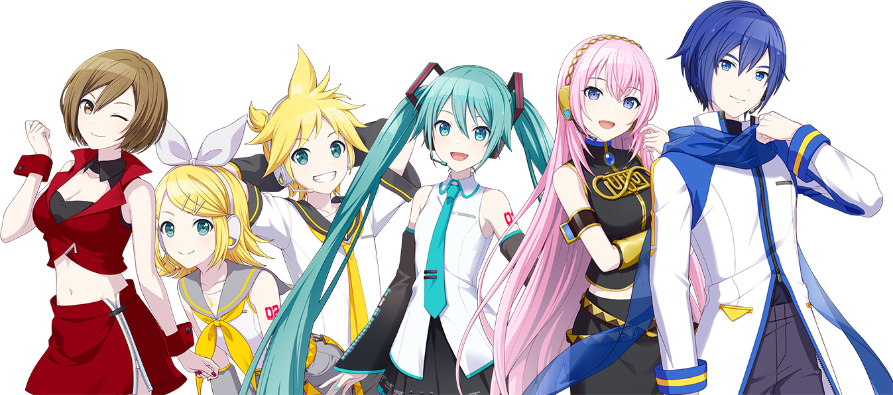

Project SEKAI COLORFUL STAGE! feat. Hatsune Miku, también conocido como
Project SEKAI
es un juego de ritmo creado en una colaboración entre SEGA, Craft Egg, Colorful Palette y Crypton
Future Media. Cuenta la historia de 5 grupos musicales que descubren sus SEKAI al mismo tiempo que
conocen a los cantantes virtuales VOCALOID.
Otori Emu, de Wonderlands x Showtime
Grupos musicales
Hatsune Miku y su grupo existen como VIRTUAL SINGERs en el mundo real ayudando a
las personas a encontrar sus verdaderos sentimientos. Las Mikus que se
encuentran en cada SEKAI son diferentes, cada una con distintas personalidades y
pensamientos.

Un grupo de cuatro amigas de la infancia, quienes se distanciaron debido a
diversas circunstancias. Hasta que la música hace que la distancia entre
ellas vuelva a cambiar.
Grupo de idols formado por una chica que soñaba con convertirse en una.
Las demás son idols con experiencia que se han enfrentado a la difícil
realidad de esa carrera.
Tres músicos talentosos y una chica tímida se unen para formar una banda. Su
sueño es sobrepasar a una leyenda musical, RAD WEEKEND, y llegar a la
cima.
En un parque de diversiones, Phoenix Wonderland, hay un escenario que
llevaba tiempo sin recibir visitas. Los miembros de este grupo decidieron unirse
para revivir al escenario.
Sin saber cómo son las demás ni cómo se llaman, un grupo de amigas se reúne en
línea a través de la aplicación Nightcord para componer canciones
juntas.